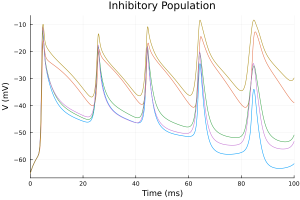
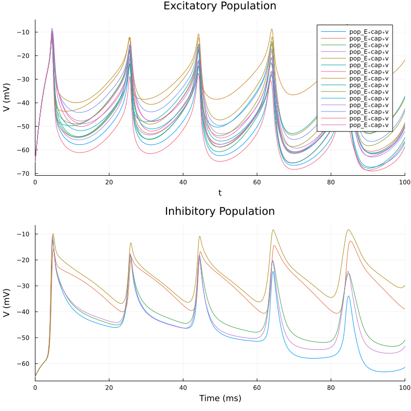

Example 4: Vectorized Populations (E/I Network)
Let's scale up to population-level models. Instead of building thousands of individual scalar systems, we can use the Vectorized topology. A single GenericChannel with a vectorized topology expands to N elements. We wire dense excitatory/inhibitory populations together using a weight matrix and the build_synapse_block helper.
The main benefit of the Vectorized topology is that it saves compile time. Compiling 1,000 scalar systems requires MTK to process 1,000 separate symbolic graphs. Using Vectorized(1000) collapses the entire population into a single system that uses array operations.
An annoyance is the need to build both scalar and vector definitions for the components. It would be nice (and maybe exists?) for MTK to have some automatic way of turning a scalar component into a vectorised one? I spent some time attempting this with postwalk, and got it running. But it was messy and dependent on the MTK internal API so decided to demand a separate set of equations for a vectorised component.
using MTKNeuralToolkit, Random
using ModelingToolkit: mtkcompile, @named
using OrdinaryDiffEq
using Plots1. Define Shared Gating Dynamics
These functions use broadcasting (.) so they work identically for both scalar and vectorized topologies.
hh_na_m = v -> (
0.182 .* (v .+ 35.0) ./ (1.0 .- exp.(-(v .+ 35.0) ./ 9.0)),
-0.124 .* (v .+ 35.0) ./ (1.0 .- exp.((v .+ 35.0) ./ 9.0))
)
hh_na_h = v -> (
0.25 .* exp.(-(v .+ 90.0) ./ 12.0),
0.25 .* (exp.((v .+ 62.0) ./ 6.0)) ./ exp.(-(v .+ 90.0) ./ 12.0)
)
sodium_gates = [GateSpec(:m, 3, 0.0, hh_na_m), GateSpec(:h, 1, 0.0, hh_na_h)]
hh_k_n = v -> (
0.02 .* (v .- 25.0) ./ (1.0 .- exp.(-(v .- 25.0) ./ 9.0)),
-0.002 .* (v .- 25.0) ./ (1.0 .- exp.((v .- 25.0) ./ 9.0))
)
potassium_gates = [GateSpec(:n, 4, 0.0, hh_k_n)]1-element Vector{GateSpec{Int64, Float64, Main.var"#8#9"}}:
GateSpec{Int64, Float64, Main.var"#8#9"}(:n, 4, 0.0, Main.var"#8#9"())2. Define Topologies and Build Populations
N_E = 15
N_I = 5
top_E = Vectorized(N_E)
top_I = Vectorized(N_I)Vectorized(5)Let's make the sodium conductance heterogeneous across the population
function build_population(name::Symbol, top)
gNa_heterogeneous = collect(range(119.0, 121.0, length=top.N))
@named cap = Capacitor(topology=top, C=1.0)
@named na = GenericChannel(topology=top, g=gNa_heterogeneous, E_rev=50.0, gates=sodium_gates)
@named k = GenericChannel(topology=top, g=36.0, E_rev=-77.0, gates=potassium_gates)
@named leak= GenericChannel(topology=top, g=0.3, E_rev=-54.4, gates=GateSpec[])
return build_compartment(cap, [na, k, leak]; name=name, V_init=-65.0, topology=top)
end
pop_E = build_population(:pop_E, top_E)
pop_I = build_population(:pop_I, top_I)Compartment{NoMorphology, NoGeometry, Float64}(Model pop_I:
Subsystems (8): see hierarchy(pop_I)
cap
injector
syn_injector
p
⋮
Equations (76):
60 standard: see equations(pop_I)
16 connecting: see equations(expand_connections(pop_I))
Unknowns (51): see unknowns(pop_I)
cap₊v(t)
cap₊i(t)
cap₊p₊v(t)
cap₊p₊i(t)
⋮
Parameters (7): see parameters(pop_I)
cap₊C
na₊g
na₊E_rev
k₊g
⋮, (V = (pop_I₊cap₊v(t))[1:5], p_pin = Model pop_I₊p:
Equations (2):
2 connecting: see equations(expand_connections(pop_I₊p))
Unknowns (2): see unknowns(pop_I₊p)
v(t)
i(t), n_pin = Model pop_I₊n:
Equations (2):
2 connecting: see equations(expand_connections(pop_I₊n))
Unknowns (2): see unknowns(pop_I₊n)
v(t)
i(t), I_ext = (pop_I₊injector₊I₊u(t))[1:5], I_syn = (pop_I₊syn_injector₊I₊u(t))[1:5], cap_name = :cap), -65.0, Vectorized(5), NoGeometry(), NoMorphology())3. Define Connectivity Matrices
The weight matrix W maps presynaptic populations to postsynaptic populations. Dimensions must be (Npost, Npre).
Random.seed!(42)
W_EE = 0.5 .* rand(N_E, N_E)
W_EI = 1.0 .* rand(N_I, N_E)
W_IE = 2.0 .* rand(N_E, N_I)
W_II = 1.0 .* rand(N_I, N_I)5×5 Matrix{Float64}:
0.775944 0.596207 0.0446057 0.893123 0.906779
0.733421 0.093655 0.302975 0.510288 0.0120888
0.846036 0.0338908 0.0817487 0.861646 0.837945
0.775418 0.691656 0.574389 0.807516 0.684251
0.969908 0.131543 0.13536 0.333389 0.1269944. Build Synapse Blocks
build_synapse_block sets up the vectorized synapse matrices and creates the SynapseSpecs for the network builder.
syn_EE = build_synapse_block(pop_E, pop_E, W_EE; name=:syn_EE, E_rev=0.0)
syn_EI = build_synapse_block(pop_E, pop_I, W_EI; name=:syn_EI, E_rev=0.0)
syn_IE = build_synapse_block(pop_I, pop_E, W_IE; name=:syn_IE, E_rev=-80.0)
syn_II = build_synapse_block(pop_I, pop_I, W_II; name=:syn_II, E_rev=-80.0)
synapse_specs = [syn_EE, syn_EI, syn_IE, syn_II]4-element Vector{SynapseSpec}:
SynapseSpec((pop_E₊cap₊v(t))[1:15], (pop_E₊cap₊v(t))[1:15], (pop_E₊syn_injector₊I₊u(t))[1:15], Model syn_EE:
Equations (2):
2 standard: see equations(syn_EE)
Unknowns (4): see unknowns(syn_EE)
s(t)
I_syn(t)
V_pre(t)
V_post(t)
Parameters (6): see parameters(syn_EE)
g_max
τ
E_rev
V_th
⋮, Compartment{NoMorphology, NoGeometry, Float64}(Model pop_E:
Subsystems (8): see hierarchy(pop_E)
cap
injector
syn_injector
p
⋮
Equations (136):
120 standard: see equations(pop_E)
16 connecting: see equations(expand_connections(pop_E))
Unknowns (51): see unknowns(pop_E)
cap₊v(t)
cap₊i(t)
cap₊p₊v(t)
cap₊p₊i(t)
⋮
Parameters (7): see parameters(pop_E)
cap₊C
na₊g
na₊E_rev
k₊g
⋮, (V = (pop_E₊cap₊v(t))[1:15], p_pin = Model pop_E₊p:
Equations (2):
2 connecting: see equations(expand_connections(pop_E₊p))
Unknowns (2): see unknowns(pop_E₊p)
v(t)
i(t), n_pin = Model pop_E₊n:
Equations (2):
2 connecting: see equations(expand_connections(pop_E₊n))
Unknowns (2): see unknowns(pop_E₊n)
v(t)
i(t), I_ext = (pop_E₊injector₊I₊u(t))[1:15], I_syn = (pop_E₊syn_injector₊I₊u(t))[1:15], cap_name = :cap), -65.0, Vectorized(15), NoGeometry(), NoMorphology()))
SynapseSpec((pop_E₊cap₊v(t))[1:15], (pop_I₊cap₊v(t))[1:5], (pop_I₊syn_injector₊I₊u(t))[1:5], Model syn_EI:
Equations (2):
2 standard: see equations(syn_EI)
Unknowns (4): see unknowns(syn_EI)
s(t)
I_syn(t)
V_pre(t)
V_post(t)
Parameters (6): see parameters(syn_EI)
g_max
τ
E_rev
V_th
⋮, Compartment{NoMorphology, NoGeometry, Float64}(Model pop_I:
Subsystems (8): see hierarchy(pop_I)
cap
injector
syn_injector
p
⋮
Equations (76):
60 standard: see equations(pop_I)
16 connecting: see equations(expand_connections(pop_I))
Unknowns (51): see unknowns(pop_I)
cap₊v(t)
cap₊i(t)
cap₊p₊v(t)
cap₊p₊i(t)
⋮
Parameters (7): see parameters(pop_I)
cap₊C
na₊g
na₊E_rev
k₊g
⋮, (V = (pop_I₊cap₊v(t))[1:5], p_pin = Model pop_I₊p:
Equations (2):
2 connecting: see equations(expand_connections(pop_I₊p))
Unknowns (2): see unknowns(pop_I₊p)
v(t)
i(t), n_pin = Model pop_I₊n:
Equations (2):
2 connecting: see equations(expand_connections(pop_I₊n))
Unknowns (2): see unknowns(pop_I₊n)
v(t)
i(t), I_ext = (pop_I₊injector₊I₊u(t))[1:5], I_syn = (pop_I₊syn_injector₊I₊u(t))[1:5], cap_name = :cap), -65.0, Vectorized(5), NoGeometry(), NoMorphology()))
SynapseSpec((pop_I₊cap₊v(t))[1:5], (pop_E₊cap₊v(t))[1:15], (pop_E₊syn_injector₊I₊u(t))[1:15], Model syn_IE:
Equations (2):
2 standard: see equations(syn_IE)
Unknowns (4): see unknowns(syn_IE)
s(t)
I_syn(t)
V_pre(t)
V_post(t)
Parameters (6): see parameters(syn_IE)
g_max
τ
E_rev
V_th
⋮, Compartment{NoMorphology, NoGeometry, Float64}(Model pop_E:
Subsystems (8): see hierarchy(pop_E)
cap
injector
syn_injector
p
⋮
Equations (136):
120 standard: see equations(pop_E)
16 connecting: see equations(expand_connections(pop_E))
Unknowns (51): see unknowns(pop_E)
cap₊v(t)
cap₊i(t)
cap₊p₊v(t)
cap₊p₊i(t)
⋮
Parameters (7): see parameters(pop_E)
cap₊C
na₊g
na₊E_rev
k₊g
⋮, (V = (pop_E₊cap₊v(t))[1:15], p_pin = Model pop_E₊p:
Equations (2):
2 connecting: see equations(expand_connections(pop_E₊p))
Unknowns (2): see unknowns(pop_E₊p)
v(t)
i(t), n_pin = Model pop_E₊n:
Equations (2):
2 connecting: see equations(expand_connections(pop_E₊n))
Unknowns (2): see unknowns(pop_E₊n)
v(t)
i(t), I_ext = (pop_E₊injector₊I₊u(t))[1:15], I_syn = (pop_E₊syn_injector₊I₊u(t))[1:15], cap_name = :cap), -65.0, Vectorized(15), NoGeometry(), NoMorphology()))
SynapseSpec((pop_I₊cap₊v(t))[1:5], (pop_I₊cap₊v(t))[1:5], (pop_I₊syn_injector₊I₊u(t))[1:5], Model syn_II:
Equations (2):
2 standard: see equations(syn_II)
Unknowns (4): see unknowns(syn_II)
s(t)
I_syn(t)
V_pre(t)
V_post(t)
Parameters (6): see parameters(syn_II)
g_max
τ
E_rev
V_th
⋮, Compartment{NoMorphology, NoGeometry, Float64}(Model pop_I:
Subsystems (8): see hierarchy(pop_I)
cap
injector
syn_injector
p
⋮
Equations (76):
60 standard: see equations(pop_I)
16 connecting: see equations(expand_connections(pop_I))
Unknowns (51): see unknowns(pop_I)
cap₊v(t)
cap₊i(t)
cap₊p₊v(t)
cap₊p₊i(t)
⋮
Parameters (7): see parameters(pop_I)
cap₊C
na₊g
na₊E_rev
k₊g
⋮, (V = (pop_I₊cap₊v(t))[1:5], p_pin = Model pop_I₊p:
Equations (2):
2 connecting: see equations(expand_connections(pop_I₊p))
Unknowns (2): see unknowns(pop_I₊p)
v(t)
i(t), n_pin = Model pop_I₊n:
Equations (2):
2 connecting: see equations(expand_connections(pop_I₊n))
Unknowns (2): see unknowns(pop_I₊n)
v(t)
i(t), I_ext = (pop_I₊injector₊I₊u(t))[1:5], I_syn = (pop_I₊syn_injector₊I₊u(t))[1:5], cap_name = :cap), -65.0, Vectorized(5), NoGeometry(), NoMorphology()))5. Driving Stimuli & Network Assembly
Give the excitatory population a constant current kick to start the activity
drivers = [(1, 15.0)]
net = build_acausal_network([pop_E, pop_I]; synapse_specs=synapse_specs, drivers=drivers)
println("Compiling vectorized network...")
sys = mtkcompile(net.sys)Model network:
Equations (120):
120 standard: see equations(network)
Unknowns (120): see unknowns(network)
(syn_II₊s(t))[5]
(syn_II₊s(t))[4]
(syn_II₊s(t))[3]
(syn_II₊s(t))[2]
⋮
Parameters (38): see parameters(network)
pop_E₊cap₊C
pop_E₊na₊g
pop_E₊na₊E_rev
pop_E₊k₊g
⋮
Observed (1210): see observed(network)Because the underlying equations are array-based, the Jacobian of this system is highly sparse: most neurons only affect their own gating variables, with off-diagonal elements coming only from the synapse blocks.
Passing jac=true, sparse=true tells the solver to compute an analytical Jacobian and leverage sparse linear algebra. This speeds simulation, as the solver only computes non-zero derivatives instead of a dense matrix. Sparse Jacobians are also essential for fast automatic differentiation (AD), which we will need later for parameter estimation.
prob = ODEProblem(sys, [], (0.0, 100.0), jac=true, sparse=true)ODEProblem with uType Vector{Float64} and tType Float64. In-place: true
Initialization status: FULLY_DETERMINED
Non-trivial mass matrix: false
timespan: (0.0, 100.0)
u0: 120-element Vector{Float64}:
0.0
0.0
0.0
0.0
0.0
0.0
0.0
0.0
0.0
0.0
⋮
-65.0
-65.0
-65.0
-65.0
-65.0
-65.0
-65.0
-65.0
-65.0Let's visualize the sparsity pattern using Plots.spy. You'll see a heavy block-diagonal structure (intrinsic dynamics) with off-diagonal bands representing the synaptic couplings between the E and I populations.
println("Plotting Jacobian sparsity pattern...")
spy(prob.f.jac_prototype,
title="Jacobian Sparsity Pattern",
xlabel="Column (Equation Index)",
ylabel="Row (Variable Index)",
size=(600, 600))
println("Solving...")
sol = solve(prob, Rosenbrock23())retcode: Success
Interpolation: specialized 2nd order "free" stiffness-aware interpolation
t: 457-element Vector{Float64}:
0.0
0.00020268175488844095
0.006342977309215736
0.01307420309331871
0.028354217849182788
0.04538472558125062
0.0731912105108848
0.10335196312223932
0.14346946590598975
0.18545347069785328
⋮
98.11021262018309
98.41507783311395
98.68549205857452
98.9559062840351
99.19761302185346
99.43931975967182
99.65533330639083
99.87134685310984
100.0
u: 457-element Vector{Vector{Float64}}:
[0.0, 0.0, 0.0, 0.0, 0.0, 0.0, 0.0, 0.0, 0.0, 0.0 … -65.0, -65.0, -65.0, -65.0, -65.0, -65.0, -65.0, -65.0, -65.0, -65.0]
[3.4296514681465494e-14, 3.4296514681465494e-14, 3.4296514681465494e-14, 3.429651468146549e-14, 3.4296514681465494e-14, 3.4296514681465494e-14, 3.4296514681465494e-14, 3.4296514681465494e-14, 3.429651468146549e-14, 3.4296514681465494e-14 … -64.99631535771817, -64.99631535771817, -64.99631535771817, -64.99631535771817, -64.99631535771817, -64.99631535771817, -64.99631535771817, -64.99631535771817, -64.99631535771817, -64.99631535771817]
[1.0779053758812967e-12, 1.077905375881337e-12, 1.0779053758812722e-12, 1.0779053758811486e-12, 1.0779053758812813e-12, 1.0779053758812967e-12, 1.077905375881337e-12, 1.0779053758812722e-12, 1.0779053758811486e-12, 1.0779053758812813e-12 … -64.88479430403905, -64.88479430403908, -64.88479430403895, -64.88479430403893, -64.8847943040391, -64.884794304039, -64.88479430403859, -64.88479430403898, -64.88479430403903, -64.884794304039]
[2.2322210609539523e-12, 2.23222106095411e-12, 2.232221060953395e-12, 2.232221060952265e-12, 2.23222106095315e-12, 2.2322210609539523e-12, 2.23222106095411e-12, 2.232221060953395e-12, 2.232221060952265e-12, 2.23222106095315e-12 … -64.76277648251109, -64.76277648251144, -64.76277648251114, -64.76277648251128, -64.76277648251225, -64.76277648251205, -64.76277648251052, -64.76277648251242, -64.76277648251289, -64.76277648251298]
[4.892830560005112e-12, 4.892830559989719e-12, 4.892830559964864e-12, 4.892830559935734e-12, 4.892830559927995e-12, 4.892830560005112e-12, 4.892830559989719e-12, 4.892830559964864e-12, 4.892830559935734e-12, 4.892830559927995e-12 … -64.48670624131962, -64.486706241331, -64.48670624133914, -64.48670624134945, -64.48670624136376, -64.48670624137247, -64.48670624137453, -64.48670624139348, -64.48670624140536, -64.48670624141535]
[7.925341846917023e-12, 7.92534184662532e-12, 7.925341846292903e-12, 7.925341845942325e-12, 7.925341845683162e-12, 7.925341846917023e-12, 7.92534184662532e-12, 7.925341846292903e-12, 7.925341845942325e-12, 7.925341845683162e-12 … -64.1804965936521, -64.18049659377299, -64.18049659388508, -64.1804965940032, -64.18049659413177, -64.18049659424568, -64.18049659434149, -64.18049659448253, -64.1804965946047, -64.18049659472176]
[1.303229641231896e-11, 1.303229640733955e-11, 1.3032296402170044e-11, 1.303229639691697e-11, 1.3032296392086912e-11, 1.303229641231896e-11, 1.303229640733955e-11, 1.3032296402170044e-11, 1.303229639691697e-11, 1.3032296392086912e-11 … -63.68388290287673, -63.68388290405324, -63.68388290520463, -63.68388290637375, -63.683882907571025, -63.68388290872877, -63.683882909834146, -63.683882911066775, -63.68388291224652, -63.68388291341178]
[1.8797149096404693e-11, 1.8797149060494928e-11, 1.8797149023984775e-11, 1.879714898721382e-11, 1.8797148951768486e-11, 1.8797149096404693e-11, 1.8797149060494928e-11, 1.8797149023984775e-11, 1.879714898721382e-11, 1.8797148951768486e-11 … -63.14988258148428, -63.149882587520956, -63.149882593502106, -63.14988259952367, -63.14988260560362, -63.1498826116015, -63.149882617482056, -63.14988262363951, -63.14988262968238, -63.14988263569359]
[2.6843170715723217e-11, 2.6843170486205263e-11, 2.684317025479647e-11, 2.6843170022579154e-11, 2.6843169794494734e-11, 2.6843170715723217e-11, 2.6843170486205263e-11, 2.684317025479647e-11, 2.6843170022579154e-11, 2.6843169794494734e-11 … -62.447029253422045, -62.44702928020601, -62.44702930686633, -62.44702933362019, -62.44702936049271, -62.44702938719819, -62.44702941363782, -62.44702944068097, -62.44702946747589, -62.447029494201324]
[3.574801060367022e-11, 3.574800965780584e-11, 3.574800870707558e-11, 3.5748007754296397e-11, 3.574800681204911e-11, 3.574801060367022e-11, 3.574800965780584e-11, 3.574800870707558e-11, 3.5748007754296397e-11, 3.574800681204911e-11 … -61.72044795566067, -61.72044803869779, -61.72044812149312, -61.72044820447833, -61.72044828767333, -61.7204483705725, -61.72044845294271, -61.72044853646758, -61.720448619520575, -61.72044870243972]
⋮
[0.7379764941068795, 0.005988531947816665, 0.005811013591941454, 0.3832553370243681, 0.00011601106540557534, 0.7379764941068795, 0.005988531947816665, 0.005811013591941454, 0.3832553370243681, 0.00011601106540557534 … -49.3362891909123, -59.62493994073022, -25.541235412421326, -60.60255923872123, -42.859800431630056, -43.3754052338176, -55.72884759267611, -54.5738056960722, -53.94754867399455, -61.441738399139226]
[0.6957993178751671, 0.0056342558097465635, 0.005467253489283596, 0.36063830541409164, 0.00010914801671113492, 0.6957993178751671, 0.0056342558097465635, 0.005467253489283596, 0.36063830541409164, 0.00010914801671113492 … -48.598898802094794, -58.975208925715464, -25.039403905662088, -59.99683110508684, -42.1097351770309, -42.650994457771525, -55.091597689022464, -53.9106178312731, -53.29854286784425, -60.88088022971233]
[0.6604129872426996, 0.005337604021850225, 0.005179408275989057, 0.3416916691993215, 0.00010340126848602589, 0.6604129872426996, 0.005337604021850225, 0.005179408275989057, 0.3416916691993215, 0.00010340126848602589 … -47.89165571406571, -58.36323043036393, -24.56938623954847, -59.4323123893089, -41.40553154801102, -41.968978797455506, -54.47445203851988, -53.26982728752633, -52.666518337308794, -60.339342815525086]
[0.6268641654218308, 0.005056572349417827, 0.004906720868484786, 0.3237363753769129, 9.795711149340981e-5, 0.6268641654218308, 0.005056572349417827, 0.004906720868484786, 0.3237363753769129, 9.795711149340981e-5 … -47.12461428895466, -57.71289102793091, -24.071550589546984, -58.8395585326956, -40.65833112150219, -41.2431795949279, -53.7993432521269, -52.57023353474171, -51.970744039024986, -59.748758464754054]
[0.598390509509807, 0.004817929473403198, 0.004675165380983047, 0.3084850177327436, 9.3334107617008e-5, 0.598390509509807, 0.004817929473403198, 0.004675165380983047, 0.3084850177327436, 9.3334107617008e-5 … -46.37816050279932, -57.09364892746079, -23.598488872777608, -58.28257183123275, -39.94732719308631, -40.55035511304907, -53.13704562863752, -51.88513205201284, -51.283462454887804, -59.17087899303709]
[0.5713197358993131, 0.004590550629854288, 0.004454541760972802, 0.293950234428278, 8.89293031427155e-5, 0.5713197358993131, 0.004590550629854288, 0.004454541760972802, 0.293950234428278, 8.89293031427155e-5 … -45.5626791193917, -56.432608756781526, -23.093673687433355, -57.696590342743775, -39.18789497513525, -39.80790411072165, -52.40820626673778, -51.13235490389827, -50.521635647291426, -58.536455287207666]
[0.548309667140462, 0.004396443148615955, 0.004266203969594648, 0.28153998984384154, 8.51690224035622e-5, 0.548309667140462, 0.004396443148615955, 0.004266203969594648, 0.28153998984384154, 8.51690224035622e-5 … -44.76401962532762, -55.80021071939645, -22.610547156900118, -57.144659815998516, -38.460584065098864, -39.09442124261457, -51.68952346830173, -50.39107492036184, -49.76487702605041, -57.91193302157259]
[0.5264361100777596, 0.004210545504049694, 0.004085836111731774, 0.2696529048718984, 8.156776390550794e-5, 0.5264361100777596, 0.004210545504049694, 0.004085836111731774, 0.2696529048718984, 8.156776390550794e-5 … -43.88676324617587, -55.12172058887585, -22.09152619796444, -56.562177256821656, -37.67889323740329, -38.324905795414956, -50.895300085947625, -49.57279171977691, -48.92238959003151, -57.22254857699424]
[0.513971140003409, 0.004103591845314345, 0.003982066779886605, 0.262813142244928, 7.949581398240455e-5, 0.513971140003409, 0.004103591845314345, 0.003982066779886605, 0.262813142244928, 7.949581398240455e-5 … -43.32124762010903, -54.692382311174434, -21.762874471114237, -56.19868233523693, -37.18369927383467, -37.835963116493055, -50.38086334974261, -49.043191478926296, -48.37341625886382, -56.77600619813747]6. Plot the Results
We splat the voltage array (...) to plot all individual elements in the population. Couldn't find a way to add numberings with MTK but I assume it exists...?
p1 = plot(sol, idxs=[sys.pop_E.cap.v...],
title="Excitatory Population", legend=true, ylabel="V (mV)")
p2 = plot(sol, idxs=[sys.pop_I.cap.v...],
title="Inhibitory Population", legend=false, ylabel="V (mV)", xlabel="Time (ms)")
Combine the simulation plots with the sparsity plot
plot(p1, p2, layout=(2,1), size=(800, 800))
This page was generated using Literate.jl.